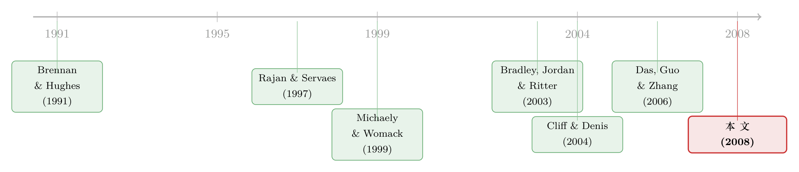

上市之后，分析师的「彩虹屁」到底值不值钱？——泡沫年代的一份证据
本文读的是 Bradley, Jordan & Ritter (2008, Review of Financial Studies)：在 1999–2000 的「泡沫年代」，一家公司刚上市后铺天盖地的分析师推荐里，市场到底信不信「自家承销商」的话？作者用 683 家 IPO、7487 条推荐发现——一旦把「推荐发生在什么时候」这件事控制住，市场对关联分析师并没有想象中那么不屑；真正决定股价反应的，不是「谁在说」，而是「这话有多出人意料」。
1 引言：一个被反复讲述、却可能讲错了的故事
先说一个几乎所有人都「知道」的故事。
一家公司要上市，请了若干家投行做承销。等到上市、锁定期一过，这些承销商旗下的分析师便纷纷开口，给出清一色的「强烈买入」。一个理性的投资者当然会想：这帮人吃人家的饭、拿人家的承销费，说的好话能信吗？于是市场理应对这些「关联分析师」的推荐打个折扣。这套逻辑听上去天经地义，以至于它后来直接写进了监管文件——2003 年 4 月那场著名的 全球和解 (Global Settlement)，十大投行掏出 14 亿美元罚款并承诺资助独立第三方研究，背后正是「承销商的研究被利益冲突污染了」这一判断。
学术上，这套逻辑最经典的背书来自 Michaely and Womack (1999)：他们发现市场确实会折价对待承销商分析师的推荐，称之为「利益冲突损害了承销商研究的可信度」。
可是，本文三位作者——其中 Jay Ritter 几乎是 IPO 研究领域的代名词——偏偏盯着这个「天经地义」的结论，问了一个朴素得近乎挑衅的问题：
如果市场真的对关联分析师一视同仁地打折，那为什么会有公司心甘情愿地多请几家承销商、就为了「买」到它们的研究覆盖？被打了折的好话，还值得买吗？
这就是全文的张力所在。作者把它拆成两个针锋相对的假说。其一，怀疑市场假说 (skeptical market hypothesis)：市场会折价对待 关联分析师 (affiliated analyst)——也就是其雇主是该 IPO 承销商的分析师——的推荐。其二，作者自己提出的 讨好假说 (currying favor hypothesis)：恰恰相反，市场该折价的是 非关联分析师 (unaffiliated analyst)。
为什么会反过来？因为「关联」固然带来利益冲突，但「非关联」分析师同样不干净——一家此刻没拿到承销资格的投行，有强烈的经济动机去发一份偏乐观的报告，好在下一次承销竞标里讨好这家公司。换句话说，先验上根本说不清谁更有偏。更何况，关联分析师往往身处高声望投行、是机构投资者票选的「全明星」，在 公平披露规则 (Regulation FD，2000 年 10 月才实施) 之前还能更早接触到公司管理层。冲突也许更大，但信息和能力也更强——这两股力量是相互抵消的。
于是市场观察到的股价反应，是这两股力量的净效果。作者要回答的第一个问题就变成了：扣掉推荐本身的特征、扣掉发布的时机，市场在净值上到底skeptical不skeptical？
2 一条被所有人忽略的暗线：推荐的「时机」
接着，一个自然的问题是：以前的研究为什么会得出「市场折价关联分析师」的结论？
本文给出的答案，是一个关于时机的、几乎被整条文献忽略掉的制度细节。
在样本期内，承销团成员的分析师被 美国证监会 (SEC) 禁止在 IPO 后的 25 个日历日内发布推荐（2002 年 7 月起对主承销商延长到 40 天），这段时间叫 静默期 (quiet period)。静默期一过，关联分析师立刻蜂拥而出、集中发起首次覆盖 (initiation)。这一点作者在更早的 Bradley, Jordan, and Ritter (2003)（标题就叫《静默期以一声巨响收场》）里已经记录过。
关键就在这里。本文把首次覆盖按时间切成两段：静默期结束那一刻（IPO 后 30 个日历日内）的覆盖，和此后 11 个月的覆盖。两段的画风截然不同：
- 静默期末的首次覆盖，超过 90% 来自关联分析师——这是制度规定的、人人都能预料到的「规定动作」。
- 静默期后的首次覆盖，则压倒性地来自非关联分析师。
那市场会怎么反应？一个高度可预期、谁都知道承销商一定会喊「买」的推荐，市场凭什么大涨？而一个意料之外、突然有家没关系的投行开始覆盖你的推荐，才真正携带了「惊喜」(surprise)。
这就是全文的核心直觉：股价对推荐的反应，本质上是对惊喜成分的反应。关联与否之所以看起来重要，只是因为它和「推荐发生在什么时候」高度相关——而时机才是真正起作用的那条暗线。
3 识别策略：用「三天窗口」捕捉惊喜
作者的实证设计其实很经典——一个标准的 事件研究 (event study)。他们计算 累积平均市场调整收益 (cumulative average market-adjusted returns, CMAR)，以纳斯达克综合指数（含股息）作为市场收益的代理。对从 \(t-n\) 到 \(t+m\) 的窗口，CMAR 定义为：
$$ CMAR(t-n,\,t+m)=\sum_{t=t-n}^{t+m}\frac{1}{N_t}\sum_{i=1}^{N_t}\bigl(r_{it}-r_{mt}\bigr) $$
其中 \(t=0\) 是推荐发布日，\(r_{it}\) 是公司 \(i\) 在事件日 \(t\) 的收益，\(r_{mt}\) 是当日市场收益，\(N_t\) 是在事件日 \(t\) 有收益数据的样本公司数。主要看的是从公告日起算的 3 天窗口。
识别的逻辑不在什么外生冲击，而在于一个对照：把同一类「首次覆盖」事件，按发生在静默期末还是静默期后切开，看市场反应是否随时机而非随身份变化。如果「身份」（关联/非关联）才是市场折价的真正对象，那么无论何时发布，关联分析师的反应都该系统性地更低；如果「惊喜」才是真正起作用的，那么同一个关联分析师，在可预期的静默期末反应平淡，在出人意料的静默期后反应强烈。
4 数据：泡沫年代的 683 家公司
数据这一块，作者下了笨功夫。
IPO 样本来自 Thomson Financial 的 SDC 美国普通股 IPO 数据库，覆盖 1999 年 1 月 1 日至 2000 年 12 月 31 日。按 IPO 文献的惯例，剔除 REITs、封闭式基金、分拆、反向 LBO、单位发行、银行与储贷机构 IPO、外国公司，以及发行价区间中点低于 $8 的发行，只保留在 NYSE、AMEX 或 NASDAQ 全国市场系统上市的公司。最终 683 家 IPO。股价与成交量来自 CRSP。
分析师数据则是从商业网站 Briefing.com 手工采集的——作者特意指出，I/B/E/S、First Call 都会漏记不少推荐（比如 Digital Island 那个例子，Bear Stearns 作为主承销商发了三次推荐，I/B/E/S 一条都没收录）。最终得到 7487 条推荐，平均每家公司上市头一年收到约 11 条推荐、来自约 5 位分析师。
观测单位是「一条推荐」。每条记录品牌、日期、强度（1 为最强、5 为最弱），若同时给出目标价也一并记下。分析师按其雇主在该 IPO 中的角色分成三类：主承销商 (lead)、联席承销商 (comanager)，以及非关联。注意这一点和 Michaely and Womack (1999) 不同——后者只区分主承销商与非主承销商，而本文把联席承销商单列，因为它们虽不如主承销商利害攸关，却也绝非无所谓的旁观者。
几个值得记住的描述性数字：首次覆盖占全部推荐的 47%，重申 (reiteration) 占 38%，升级与降级合计仅 15%；评级压倒性乐观——87% 的推荐是「强烈买入」或「买入」，5697 条里只有 15 条落在最差的「卖出」一档。按角色看，主承销商贡献 22% 的推荐、联席承销商 36%、非关联 42%。
5 主要结果：反转出现
现在到了最关键的一步。先看那张让全文立论的小表（论文正文给出的 3 天 CMAR）：
| 承销商角色 | 全样本 | 静默期末 | 静默期后 |
|---|---|---|---|
| 主承销商 (Lead) | 0.3% | −0.3% | 4.8% |
| 联席承销商 (Colead) | 0.2% | −0.5% | 2.9% |
| 非关联 (Unaffiliated) | 2.6% | 2.2% | 2.6% |
只看第一列（全样本），故事和 Michaely and Womack (1999) 完全一致：市场对关联分析师的首次覆盖几乎没反应（0.3%、0.2%），对非关联分析师却给出 2.6% 的正向反应。看起来市场确实在「打折」。
但真正关键的一步在于后两列。一旦把时机控制住，反转就出现了：
- 关联分析师在静默期末的覆盖，市场反应是 −0.3%、−0.5%——几乎为零甚至微负。这毫不奇怪，因为这是规定动作，人人都预料到了，没有任何惊喜。
- 而同样是关联分析师，在静默期后才发起的覆盖，市场反应高达 4.8%（主承销商）和 2.9%（联席承销商）——远高于非关联分析师的 2.6%！
换句话说，当关联分析师的推荐携带了真正的惊喜时，市场不但没有折价，反而给出了比非关联分析师更强烈的正面反应。所谓「市场怀疑承销商」，很大程度上是一个被时机混杂出来的假象：因为关联分析师的覆盖大量集中在可预期的静默期末，平均下来反应自然平淡。
这正是与 Michaely and Womack (1999) 分道扬镳之处。本文的结论是：在控制了推荐特征与时机之后，没有证据表明市场折价关联分析师的推荐。后续的升级与降级也讲同一个故事——来自主承销商的升降级，比来自非关联分析师的，引发更大的市场反应。
接着，作者把矛头转向第二个流传更广的「常识」：公司能不能通过多请承销商、或者通过 抑价 (underpricing) 来「买」到更多分析师覆盖？
这里他们给出了一个漂亮的、带着时间维度的答案。先看覆盖的事实：主承销商旗下分析师在一年内发起覆盖的概率高达 89%（683/767，作者说若把 First Call、Investext 等所有数据源都算上，真实值接近 98%），联席承销商为 73%（1233/1698），加权后约 78%。所以「加一个联席承销商，就大概率多一位分析师在一年内覆盖你」——这条常识本身是对的。
但真正的问题是：这种覆盖能持续多久？作者发现，约三分之一的情况下，静默期末那一次首次覆盖之后，那位分析师在接下来的 11 个月里再没发过任何推荐。更要命的是：
加联席承销商确实能在 IPO 后立刻带来更多覆盖；但在随后的 11 个月里，覆盖一家公司的分析师数量，与承销商数量无关。同样，抑价只和静默期末的覆盖相关，与此后 11 个月的覆盖无关。
一句话——「长期」来得非常快。公司在上市时使的那些劲（多请承销商、放大抑价），换来的覆盖几乎都是「一锤子买卖」，短暂得令人意外。（关于「公司是否真在用抑价买覆盖」这条线，可参见《华尔街亏的钱，怎样变成了瑞士小镇上涨的房价》 之外更切题的 Cliff and Denis (2004) 一脉的讨论。）
6 文献脉络
把这篇论文放回它所在的那条研究河流里看，会更清楚它的位置。
最上游，是关于「分析师覆盖为什么重要」的理论。Brennan and Hughes (1991) 把分析师跟踪和信息供给、股价联系起来，奠定了「覆盖是有价值的稀缺资源」这一基调。紧接着，Rajan and Servaes (1997) 系统记录了 IPO 之后的分析师跟踪行为，把这条线引入了新股研究。
然后，一个绕不开的转折点是 Michaely and Womack (1999)——它正是发表在本刊（RFS）上的、确立「市场折价承销商分析师」这一主流认知的经典之作，也是本文最直接的对话对象。

此后文献沿着「利益冲突到底有多严重」继续推进：Bradley, Jordan, and Ritter (2003) 揭示了静默期结束时的覆盖井喷（本文核心识别的制度基础就来自这里）；Cliff and Denis (2004) 检验了「公司是否用抑价购买覆盖」；Das, Guo, and Zhang (2006) 则研究分析师的选择性覆盖与新股的后续表现。本文站在这一脉的下游，贡献是：用泡沫年代一份手工采集的、更干净地区分了「时机」与「身份」的数据，对 Michaely-Womack 的经典结论做了一次有力的修正——市场之所以看似怀疑承销商，主因是时机的混杂，而非身份本身。
7 评论与延伸（Q&A + 研究方向）
(a) 几个可能的疑问
Q：作者真的「推翻」了 Michaely and Womack (1999) 吗？
严格说不是「推翻」，而是「重新归因」。两篇论文在全样本上的事实是一致的——市场对关联分析师推荐的平均反应确实更弱。分歧在于解释：MW 归因于身份（利益冲突损害可信度），本文归因于时机（关联覆盖集中在可预期的静默期末）。一旦控制时机，身份的折价就消失了，甚至反向。
Q：那「惊喜」和「身份」会不会本身就纠缠在一起、根本分不开？
这是最该担心的问题。作者的处理是把同一身份（关联）的分析师，按静默期末 vs 静默期后切开——同一类人、不同时机，反应从 −0.3% 跳到 4.8%。这个组内对比很有说服力。但要承认，静默期后还愿意发起覆盖的关联分析师，可能本身就是「有话要说」的一批（选择性），这一层内生性论文并未完全排除。
Q：样本只取 1999–2000 的泡沫年代，结论还能外推吗？
这是外部效度的硬伤，作者也坦承。泡沫期的乐观情绪、抑价幅度、分析师乐观度都处于极端值（87% 的推荐是买入或更高）。好在 Adams, Slovin, and Sushka (2005) 用 1997–1998 的 IPO 做了互补分析，结论与本文一致，多少缓解了「只是泡沫期特例」的担忧。
Q：为什么主承销商和联席承销商的降级比升级还多？这不反直觉吗？
有关联反而更常降级，听上去确实怪。作者给的简单解释是：关联分析师一开始就给了更强的评级（强烈买入），上无可上，只剩下调空间——「强烈买入」没法再升级，只能维持或下调。这是个机械性的天花板效应，而非什么良心发现。
Q：「长期来得很快」这个说法，对想用承销商数量买覆盖的公司意味着什么？
意味着这笔投资的回报极其短命。多请一个联席承销商，能换来静默期末那一波集中覆盖，但 11 个月后，覆盖你的分析师数量和承销商数量已经毫无关系。换言之，公司花钱买到的是「上市初期的喧闹」，而不是「持续的关注」。
Q：手工从 Briefing.com 采集数据，会不会引入选择偏差？
会有覆盖不全的问题（作者明说 Briefing.com、I/B/E/S、First Call 都不完整），但关键是这种缺漏是否系统性地偏向某一类分析师。作者通过多源交叉核对（First Call、Investext）把主承销商的真实覆盖率从 89% 修正到约 98%，说明缺漏主要是「漏记」而非「偏记」，对核心的市场反应结论影响有限。
(b) 几个可能的研究问题与提案
1. 把「时机即惊喜」的逻辑搬到公司债评级上。 【经济故事】评级机构和分析师一样面临「发行人付费」的利益冲突质疑。如果市场对评级的反应同样主要由「惊喜成分」驱动，那么把评级行动按「是否在可预期的时点（如季度复评、契约触发）」切开，应能复现本文式的反转。【可行性】中。需要 Moody's/S&P 评级历史 + TRACE 债券价格事件研究，识别难点在于界定「可预期的评级时点」。
2. 外资持有人是否改变了承销商研究的「可信度折价」？ 【经济故事】本文样本是美国本土。若一家公司的边际投资者中外资占比高，他们可能更依赖承销商研究（信息劣势），也可能更警惕利益冲突。两种力量谁占上风，可检验「惊喜效应」是否随投资者构成而变。【可行性】中。需要 13F/国别持股数据匹配 IPO 与分析师推荐，跨国比较识别较干净，但分析师数据的跨国可得性是瓶颈。
3. Regulation FD 实施前后，关联分析师的「信息优势」溢价是否被抹平？ 【经济故事】本文强调关联分析师在 FD（2000 年 10 月）之前能更早接触管理层，这是其推荐含金量的来源之一。FD 切断了选择性披露，理论上应削弱关联分析师的信息优势，从而压缩其静默期后的超额反应。【可行性】高。本文样本恰好横跨 FD 实施日，可直接做一个 FD 前后的 DiD，是个现成的、几乎 doable 的延伸。
4. 「一锤子覆盖」与新股的长期流动性。 【经济故事】本文发现约三分之一的首次覆盖之后再无下文。这种「来了又走」的覆盖，可能在上市初期制造短暂的关注与流动性，随后骤然蒸发。可检验覆盖的「持续性」而非「数量」如何预测新股的长期 bid-ask 价差与换手率。【可行性】高。本文已有的覆盖时间序列 + CRSP/TAQ 流动性指标即可，识别上需处理覆盖与流动性的双向因果。
我的判断
这篇论文的贡献，不在于发明了什么新方法，而在于一个精准的再归因：它抓住了静默期这条几乎被整条文献当作背景噪声的制度细节，把「市场怀疑承销商」这个流行结论，干净利落地拆解成「市场对可预期事件不反应」。结论本身是反直觉的、也是有政策含义的——2003 年全球和解的整套逻辑，建立在「承销商研究被市场系统性折价（因而需要监管纠偏）」之上，而本文提示这个前提至少是被夸大了的。
但我对识别仍有两点保留。其一，前面提到的选择性：静默期后还愿意主动发起覆盖的关联分析师，未必能代表全体关联分析师，那 4.8% 的高反应里可能掺了「自选择」的水分。其二，泡沫期的外部效度：87% 买入、15 条卖出的极端乐观环境，是否会放大或扭曲「惊喜效应」，单靠 Adams et al. (2005) 的 1997–1998 样本还不足以完全打消疑虑。
后续我最想看到的，是把这套「时机 = 惊喜」的识别逻辑放到 Regulation FD 这个干净的断点上去检验（上面的提案 3），以及推广到公司债评级市场——如果连债券评级的市场反应也主要由可预期性而非发行人关系决定，那「利益冲突损害研究可信度」这一在信用市场同样根深蒂固的叙事，恐怕也要重新算一笔账。
参考文献
Adams, B., M. B. Slovin, and M. E. Sushka (2005). An Analysis of Analyst Coverage of Initial Public Offerings. Working Paper, University of Portland.
Bradley, D. J., B. D. Jordan, and J. R. Ritter (2003). The Quiet Period Goes Out with a Bang. Journal of Finance 58, 1–36.
Bradley, D. J., B. D. Jordan, and J. R. Ritter (2008). Analyst Behavior Following IPOs: The "Bubble Period" Evidence. Review of Financial Studies 21(1), 101–133.
Brennan, M. J., and P. J. Hughes (1991). Stock Prices and the Supply of Information. Journal of Finance 46, 1665–1691.
Cliff, M. T., and D. J. Denis (2004). Do IPO Firms Purchase Analyst Coverage with Underpricing? Journal of Finance 59, 2871–2901.
Das, S., R.-J. Guo, and H. Zhang (2006). Analysts' Selective Coverage and Subsequent Performance of Newly Public Firms. Journal of Finance 61, 1159–1185.
Michaely, R., and K. L. Womack (1999). Conflict of Interest and the Credibility of Underwriter Analyst Recommendations. Review of Financial Studies 12, 653–686.
Rajan, R. G., and H. Servaes (1997). Analyst Following of Initial Public Offerings. Journal of Finance 52, 507–529.